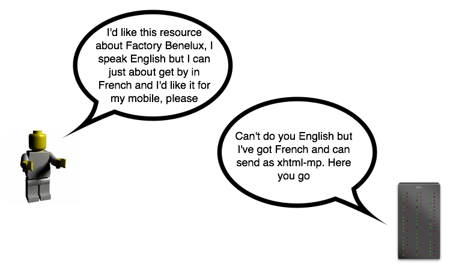

An introduction to linked data
Lets start with some egg sucking
The internet
The internet ≠ the web
The web
The web = the internet
The web = the internet + links
The web = the internet + links + documents
...or....
The web = the internet + http + html
Web standards
http://en.wikipedia.org/wiki/Web_standards#Common_usage
When a web site or web page is described as complying with web standards, it usually means that the site or page has valid or nearly valid HTML, CSS and JavaScript. The HTML should also meet accessibility and semantic guidelines.
http://en.wikipedia.org/wiki/Web_standards#Common_usage
When a web site or web page is described as complying with web standards, it usually means that the site or page has valid or nearly valid HTML, CSS and JavaScript. The HTML should also meet accessibility and semantic guidelines.
We tend to obsess on the documents:
- "Semantic" HTML
- HTML, HTML2, HTML3, HTML4, XHTML, HTML5...
- DOM
- ?Flash?
- ufs
- CSS
- document accessibility
- validation
...at the expense of the links:
- HTTP
- URIs
The trouble is...
...HTML has always been...
- ...a bit of a hack
Everything that's good about the web comes from links
- wikis
- blog permalinks
- citations
- sharing
- social bookmarking
- socialness in general...
If you can point at something you can talk about it and share it
The web = the internet + http + html
<aside>
On SEO (sorry)
- in the days of Alta Vista and Yahoo! mk 1 search was all about documents
- metatags...
- ...and keyword density
- Google changed the game with PageRank by making search...
- ...less about keyword density...
- ...and more about link density
</aside>
Magazines are made of pages....
...websites are made of links
One problem with the web
- people aren't really interested in documents
- they're interested in things
We need to get from this...
..to this
The other problem with the web...
...people can parse documents and extract meaning...
...but machines can't
We need to help machines to understand the web...
...so machines can help us to understand things
The semantic web
Mk 1
- an attempt to make documents that machines could understand
- using RDF
- before we go any further...
<aside>
RDF
- is a way to model data
- is not a serialisation
- can be serialised as XML
- or inside HTML (as RDFa)
- or N3
- or Turtle
- or even json
</aside>
The RDF data model
RDF
- is based on triples
- subject, predicate, object
- <The sky> <has the colour> <blue>
More examples
- <Bernard Sumner> <was a member of> <New Order>
- <Bernard Sumner> <was born in> <Salford>
- <Tony Wilson> <was born in> <Salford>
- <Tony Wilson> <founded> <Factory Records>
- <New Order> <were signed to> <Factory Records>
- <New Order> <were directors of> <The Hacienda>
- <Tony Wilson> <was a director of> <The Hacienda>
Triples combine to form a graph...
...which is fundamentally different to the set based approach of relational databases
Graphs are web like - so easily expandable and scaleable
One night in Manchester - birth of Factory Records
So what happened
- lots of people made interlinked foaf files
- but there was a shortage of vocabularies to describe other things
- so the foaf files only really linked to other foaf files
- it all became a little document-y
- and less link-y
Semweb mk 1 = the internet + http + rdf
<yet_another_aside>
On REST
- described by Roy Fielding
- about the proper use of HTTP (post, get, put, delete)
- separated the resource (abstract) from...
- the representation (concrete-ish)
If I ask for a document about Factory Benelux...
- ...my user agent (browser) sends additional information...
- ...about what I accept in the form of accept headers
- I may accept French but prefer English
- I may accept JSON but prefer RDF
- I may accept full fat xhtml but prefer xhtml-mp
The key is
- a URI identifies a resource
- not a representation
- I ask for a resource - the server returns the best possible representation
Content negotiation - what I want / what I accept

Content negotiation - what I'm given

Not always successful
- the resource may exist
- but with no representation that matches your accept headers
- 406 - Not acceptable
- My favourite HTTP code :-)
Content negotiation - what I want / what I accept
Content negotiation - what I'm not given
An honorary mention for One Web
The Web is designed as a universal space. Its universality is its most important facet. I spend many hours giving talks just to emphasize this point. The success of the Web stems from its universality as do most of the architectural constraints.
#timbl- So one URI per resource; many representations per resource
- Mobile demands a different representation...
- ...but not a different resource...
- ...and not a different URI
- so no mobile. or .mobi etc
If you can point at something you can talk about it and share it... universally
</yet_another_aside>
Back to linked data
Linked data
- is sort of a second pass at the semantic web
- still uses rdf (although that can be contentious)
- as the name implies puts the emphasis back on links
- is about things not documents
Linked data = the internet + http + rdf
Linked data = web standards
Design issues for linked data
- Use URIs as names for things
- Use HTTP URIs so that people can look up those names
- When someone looks up a URI, provide useful information, using the standards (RDF, SPARQL)
- Include links to other URIs. so that they can discover more things.
- http://www.w3.org/DesignIssues/LinkedData.html
Use URIs as names for things (my emphasis)
- separating resource from representation (REST) gets us so far
- but it's still about getting resources as information documents...
- ...and we still think primarily about information resources
The map is not the territory
- http://www.factoryrecords.net/ is an information resource about Factory Records
- it might be available as HTML or json or RDF
- but it is not Factory Records
- http://moustaki.org/ is an information resource about Yves
- but it is not Yves
Non-information resources
- why do we need the distinction?
- is saying http://moustaki.org/ represents Yves good enough?
- Yves was not created when http://moustaki.org/ was created
- The person who created http://moustaki.org/ (Yves) did not create Yves
- I am not friends with http://moustaki.org/
- And the people who created http://www.factoryrecords.net/ did not create Factory Records
We want to be able to make different claims about the thing and the document about the thing
So we need URIs for non-information resources - stuff that you can't send down wires
What happens if someone asks for a non-information resource?
What happens if someone asks for a non-information resource?
Comparing the microformats and linked data approaches
Given 2 websites...
The microformats approach: XFN @rel

The linked data approach: 2 new non-information resources...
...each with a homepage...
...tying together the 2 people, not the 2 documents
Designing URIs for non-information resources
Slash URIs
- You can give the non-information resource a completely different path
- http://dbpedia.org/resource/New_Order is the DBpedia URI for New Order
- if you attempt to dereference http://dbpedia.org/resource/New_Order it can't be sent down the wires...
- ...so it 303s (see other)...
- to http://dbpedia.org/page/New_Order - an information resource about New Order...
- ...which is then content negotiated to either HTML or RDF depending on what you accept
Slash URIs in pictures: slash + 303 + conneg
You need to be able to configure your server for 303s and content negotiation.
Hash URIs
- or you can give the non-information resource a hash URI
- http://www.bbc.co.uk/music/artists/f1106b17-dcbb-45f6-b938-199ccfab50cc#artist is the BBC URI for New Order
- if you attempt to dereference http://www.bbc.co.uk/music/artists/f1106b17-dcbb-45f6-b938-199ccfab50cc#artist it can't be sent down the wires...
- ...but there's no need for a 303...
- ...http://www.bbc.co.uk/music/artists/f1106b17-dcbb-45f6-b938-199ccfab50cc is content negotiated to either HTML or RDF depending on what you accept
- and your user agent looks for a #artist inside it
Hash URIs in pictures: hash + conneg
Cheaper setup - no need to set up for 303s although you still need content negotiation. Fewer round trips to server.
RDFa URIs in pictures: hash only

Cheapest setup - no need to set up for 303s or content negotiation.
So, what's the point?
Different people know (or claim to know) different things about the same topic
Linked data is a web-scale database
A special mention for owl:sameAs
owl:sameAs
- allows us to declare that non-information resources across the web are the same thing
- so the BBC's New Order is the same as...
- ...the MusicBrainz New Order is the same as...
- ...the DBpedia New Order is the same as...
- ...the last.fm New Order is the same as...
- ...etc
So if we say...
- http://www.bbc.co.uk/music/artists/d5da1841-9bc8-4813-9f89-11098090148e#artist
- <owl:sameAS>
- http://dbpedia.org/resource/New_Order
- we can combine knowledge that's currently scattered across the web...
- ...and construct a knowledge that's greater than the sum of its parts
When sameAs goes wrong
- Language is ambiguous
- We often use the same labels to refer to different things in different contexts
An example stolen from Tom Heath
- I have in my house a bottle of Bowmore single malt whisky...
- ...which is one bottle of one vintage (Bowmore 18 year old single malt)...
- ...which is one vintage of one brand (Bowmore single malt)...
- ...which is distilled by the Bowmore Distillery
- The Distillery, the brand, the vintage and my bottle are not the same thing...
- ...but we use the same label
When we declare sameAs we need to be careful
- If I said my bottle of Bowmore whisky was the sameAs the Bowmore Distillery and someone else said the Bowmore Distillery was created in 1779...
- ...then by implication my bottle would be have been created in 1779...
- ...which would be quite a vintage
When using sameAs you need to decide
- is this the same thing in a different context
- or does the different context make it a different thing
- which can get tricky
Ceci n'est pas une pipe...
...and this is not Hamlet
It is...
- a photograph of...
- ...one copy of...
- ...one edition of...
- ...one version of...
- ...Hamlet
Once you've minted a URI for a non-information resource
- anybody else can make claims about that resource (including sameAs)
- the claims may be true... or not
- we still need trust mechanisms
- [and we should be particularly careful when minting URIs for people]
Linked data can describe anything
There are vocabularies available for
And if an ontology doesn't exist
- you can make one
and now...
Let's learn about Turtle and SPARQL